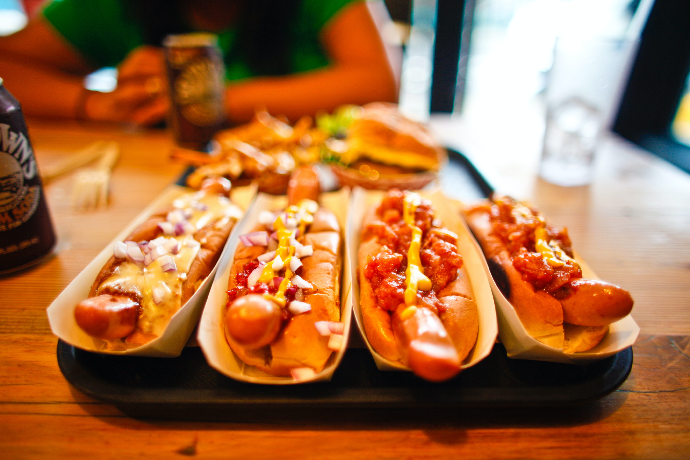

Hot dog recipe

Description
For a classic outdoor snack with a handheld twist, these hot dogs will make any camper happy!
Ingredients
- 6 hot dogs
- 3 sticks string cheese, cut or peeled into thin strips
- 1 can pizza dough, cut length wise into 6 1 in (2 1/2 cm) wide strips
Steps
- Insert a skewer into a hot dog. Cut a spiral by holding your knife at a diagonal to the top of the hot dog
and rolling it down along a cutting board until you reach the bottom.
- Wind a strip of cheese into the spiral groove on the hot dog. You may need 2 strips of cheese to fill the
entire spiral.
- Lay a strip of pizza dough on a cutting board and place the end of the hot dog skewer on a diagonal. Gently
roll the hot dog in the dough, ensuring that the dough overlaps so no cheese leaks through. Gently remove
the skewer and loosely wrap the hot dog in a sheet of foil so the dough has room to expand as it cooks.
Repeat with the remaining hot dogs and dough.
- Place the hot dogs over low heat on a campfire or grill. Let them cook for 10 minutes, check to see that the
dough has puffed, then flip over to cook through, about 10 minutes more.
- Let the hot dogs cool for a few minutes before carefully unwrapping, then serve with ketchup, mustard,
relish, and onion.